Local or hosted AI, your choice
Use LM Studio to keep everything on your PC. If your PC can't run models, connect OpenRouter, Google Gemini or Hugging Face with your own API key. A "free models only" filter hides models that cost money.
Type or talk to it, and it can answer out loud. It runs fully on your own PC through LM Studio, or on a hosted AI provider if you choose one. No sign-up, no telemetry.
Windows 10 or 11, 64-bit. Installer or portable zip. SmartScreen note
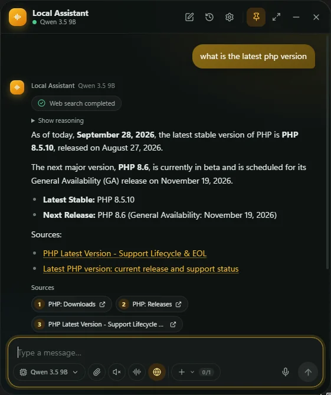
Press Ctrl+Space to open it. When you close it, it goes to the system tray.
Use LM Studio to keep everything on your PC. If your PC can't run models, connect OpenRouter, Google Gemini or Hugging Face with your own API key. A "free models only" filter hides models that cost money.
Speak your question and hear the answer read back with local neural voices.
A phone-call style screen with live captions, so you can talk without using the keyboard.
Press a hotkey, speak, and the text is typed into Notepad, your browser, or whatever app has focus.
A single small multilingual voice model (Supertonic 3, 123 MB, 31 languages) speaks English, Arabic, German and more. Arabic text is shown right-to-left.
For "latest / today" questions the assistant searches the web and lists the pages it used. One button in the composer turns search on or off.
Connect Model Context Protocol servers. Anything that writes data or runs commands asks you first, and you choose per chat which servers are on.
Select text in an answer, then right-click to hear it read aloud, get a short explanation, or ask about it as the next message.
Speeds up speech recognition and the voices. If the GPU fails to start, the app falls back to the CPU.
Speech recognition and the assistant's voice always run on your PC, whichever AI provider you use.
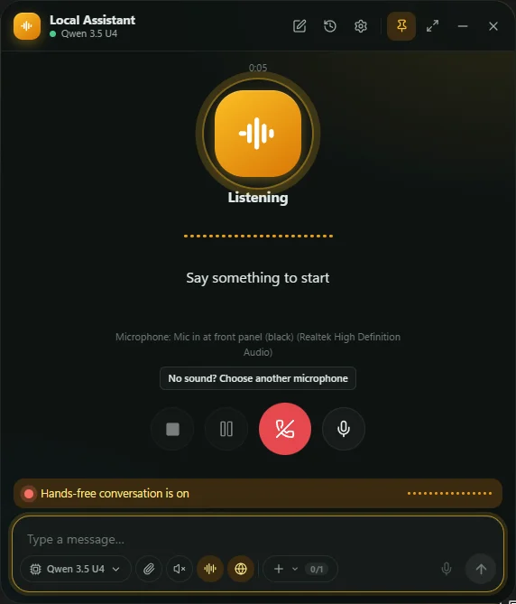
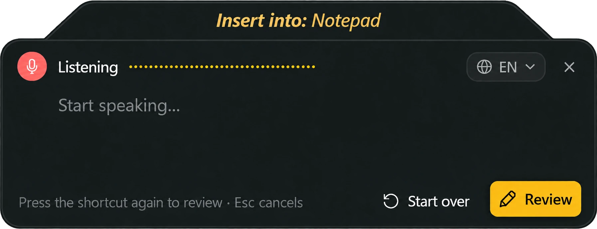
Select any part of the assistant's answer and right-click it.
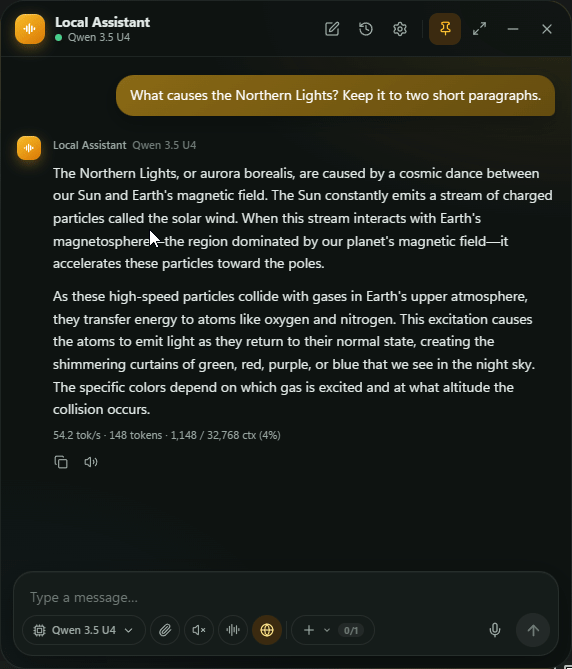
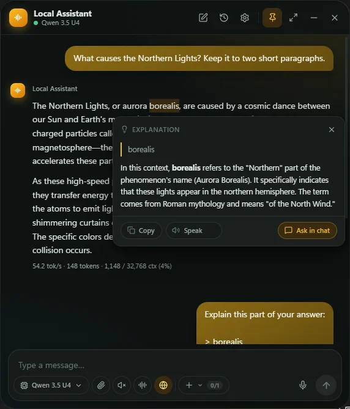
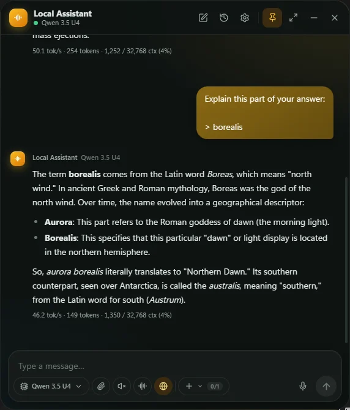
Leave the model on Auto and the app uses the model already loaded in LM Studio. If none is loaded, it picks one that fits your GPU memory. You can pick a model yourself at any time.
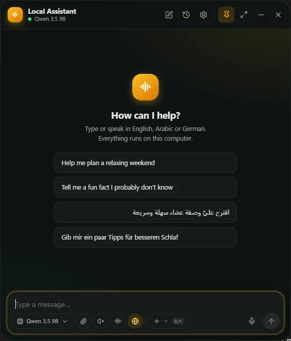
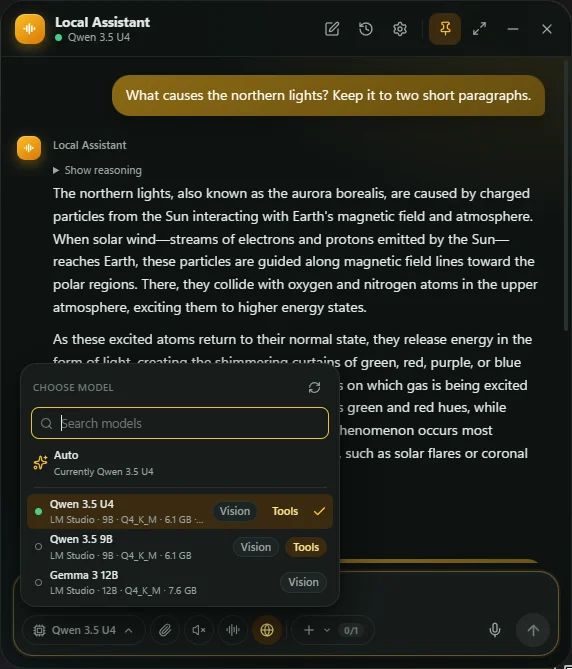
You can also change every keyboard shortcut in Settings, then Keyboard Shortcuts.
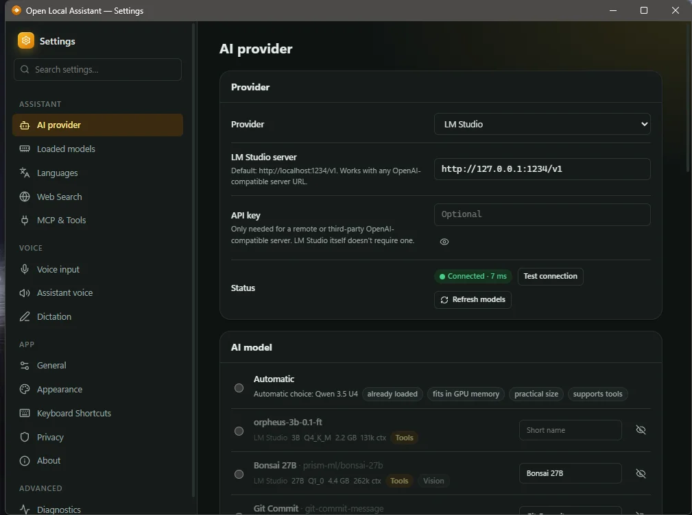
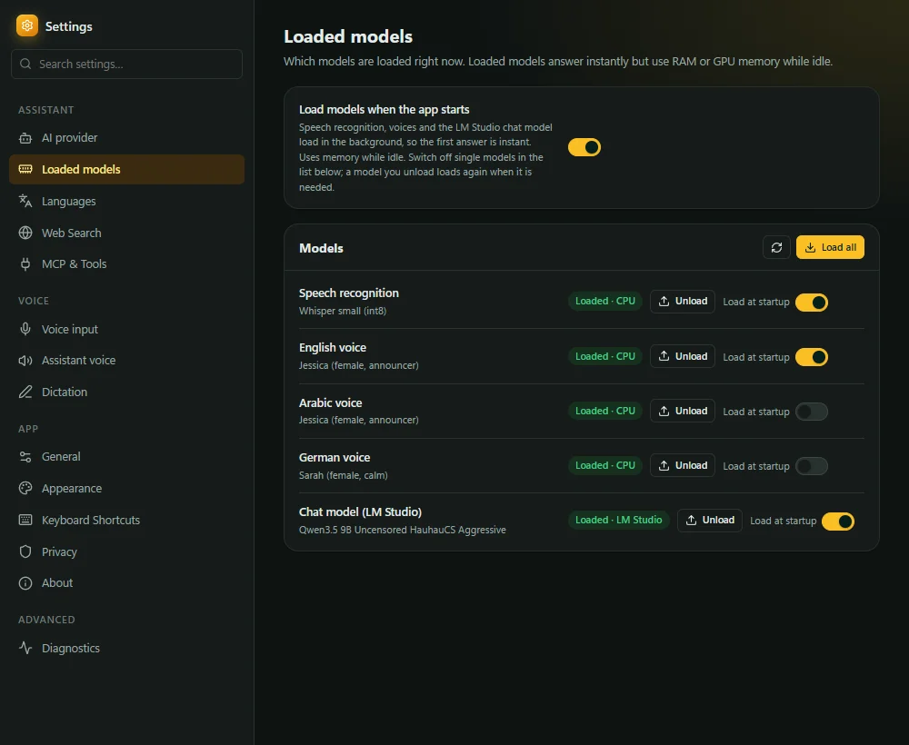
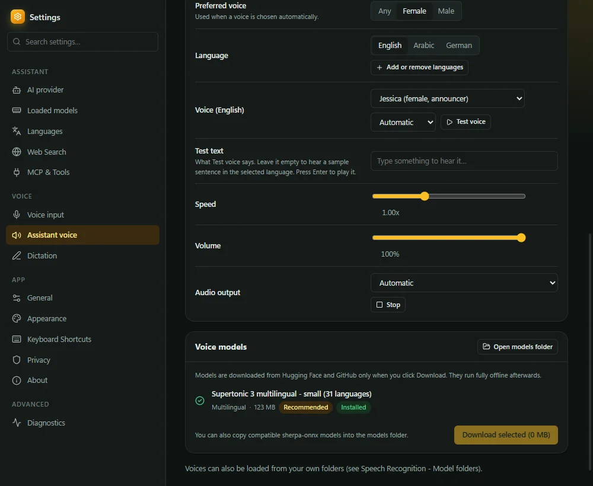
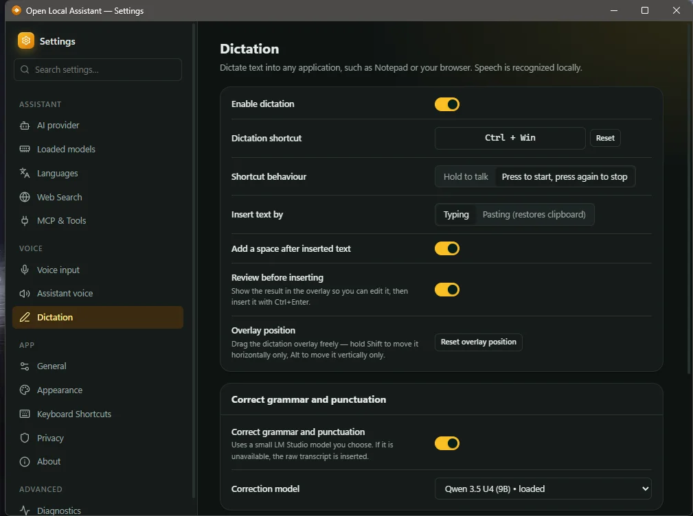
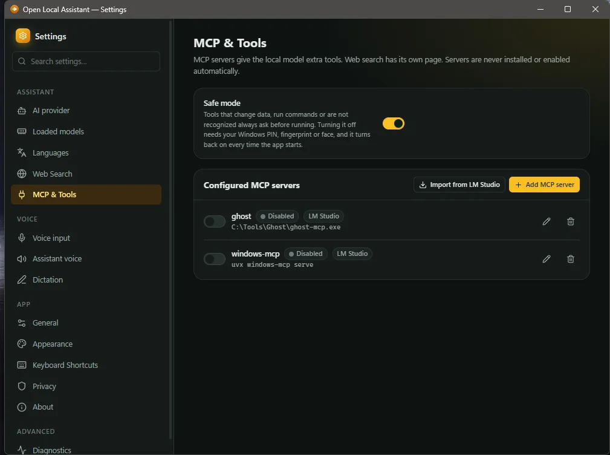
Conversations, settings, API keys and logs are stored only on your PC. Nothing is sent anywhere except:
Speech recognition (including dictation) and the assistant's voice always run on your PC, whichever AI provider you use. Only the optional dictation grammar cleanup uses the AI model.
Read the full privacy policy, including every service the app can connect to.
Free software under the GNU General Public License v3.0. You can use, study, change and share it.
Windows 10 or 11, 64-bit, plus one AI provider: LM Studio with its local server on, or an API key from OpenRouter, Google Gemini or Hugging Face (free models are available).
The installer puts the app in C:\Program Files\Open Local Assistant and adds a Start menu entry and an uninstaller. For the portable zip, extract the folder anywhere and keep the four .dll files next to the .exe.
The builds are not code-signed yet, because a certificate costs money every year and this is a free app. Windows SmartScreen shows a warning. Click More info, then Run anyway. If you'd rather not, build it yourself from the code.
Compare the SHA-256 hash of your file with the one in the checksums file on the release page. In PowerShell:
Get-FileHash .\Open-Local-Assistant-<version>-setup.exeHosted provider: almost any Windows 10 or 11 PC. Local models: roughly 16 GB of RAM for small models (3 to 4B). For 7 to 8B models, an NVIDIA GPU with 8 GB or more of video memory keeps replies fast. Voice features run on the CPU of any modern PC.